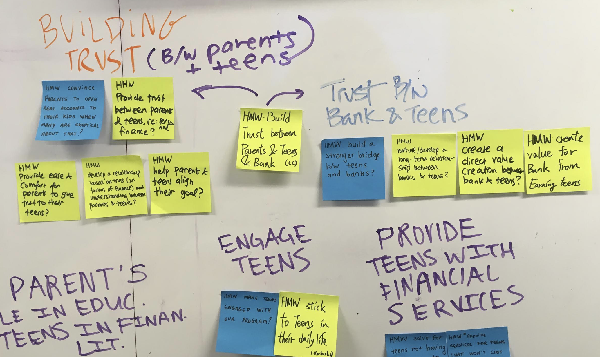
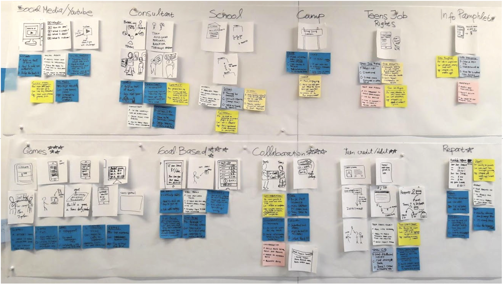

PNC Bank - Financial education for teens
This project proposed by PNC Bank, aimed to make teenagers more financially educated while attracting new clients to the bank. With this in mind, our team produced a tool that could provide a better communication between teenagers and their parents, while teaching them financial education.

Project breakdown
Scope
8 weeks
5 person team
My roles
UX Researcher
UX Designer
Skills
Scenarios
Personas
Storyboarding
Speed Dating
Prototyping
Tools
Illustrator
Paper + Pencil
Sketch
Money Muscle
Focusing on the issue of making teens financially literate, our final solution is an app called MoneyMuscle. The app is provided by the user's bank and is intended to be used by both teens and parents through a joint account. Through this app teens and parents answer financial questions or budget wisely and earn stars that translate into an opportunity to earn a discount at participating restaurants.
Research
Competitive analysis
The team conducted online secondary research, by doing a competitive analysis and literature reviews. We were able to identify the main solutions of other banks to solve the problem and after acquiring some knowledge on the theme, we interviewed teenagers to learn more about their money habits and overall financial knowledge.

Stakeholder models
During research, we created a stakeholder model, showing all entities that could educate teens on financial matters. We also identified that the specific group of earning teenagers was not specifically targeted by PNC competitors. This group is composed by working teenagers or teens who receive money as gift.
Ideation
Current State Model
The team then created a current state model mapping which entities influence the earning teens's spending habits. The most interesting insight was that we couldn't find a direct link between the teenagers and the bank, because most teenagers don't have bank accounts. Based on this, one goal became to create this lacking connection.

Personas
Following, the team created personas symbolizing a teenager, a parent and a banker; all the main agents involved in our product. This helped us to better analyze our users' and stakeholders' main needs and goals.
Felix the teen
Marcia the mom
Sara the banker
Felix is 16 years old hig school student who receives a weekly allowance from his parents during the school year and works during summer break. His dream is going to college, but his financial short-term goals discourage him to keep his discipline in saving up money for that.
Marcia is a 55 years old mom who has 3 children. Marcia and her husband try to keep their financial matters private from their children, in order to not overwhelm them. At the same time, she would like them to be more interested and knowledgeable in financial topics. She gives her kids weekly allowance but is not sure if this is the best practice for making them more money conscious.
Sara works as a financial advisor in the student banking division of a bank. She noticed that many of the bank`s competitors provide similar student banking services so Sara wants to create a unique strategy to differentiate her bank from others.
Design Sprint
To move our team along, we decided to do a Design Sprint to quickly brainstorm solutions. We first identified pain points on the current state Value Flow Diagram and based on them created How Might We... statements that articulate problem space which we use to drive our service design development. We continued by affinity grouping How Might We... statements and then voted problem spaces that are in line with the research we had done earlier on.

Focusing on the chosen problem space, we brainstormed concepts by using the Crazy 8 seconds method which helped us generate over 30 concepts in under 30 minutes. Again, we affinity grouped our concepts and identified each one Pro, Con and Opportunity space that may come up if we decide to develop the idea further. Lastly, we chose the top three concepts that has a large space in being developed. This Design Sprint process helped us to create, design and decide our top three scenarios which are Game-Based Solution, Goal-Based Solution and Collaboration-Based Solution.

Storyboards
We then generated 9 different storyboards, based on the 3 previously decided concepts with the 3 most promising ideas that had been created for each of these groups.

Iteration
Speed Dating
The team conducted speed dating sessions with 6 teenagers and 2 parents, showing them the 9 previously developed storyboards. We wanted to see their emotional reactions to our ideas and to also identify if users would feel a need of our solutions. The main information obtained from them were that neither teenagers nor parents would like to have competition solutions and also didn't seem excited to learn from games or from long videos. On the other hand, most of them seemed excited to have an easy way of controlling or checking their spendings.

Low-Fidelity Prototype
We used the speed dating findings to adapt our most promising idea, by adding rewards and stimulating collaboration between parents and teens, keeping their spendings private but targeting a dialog between both. For our final iteration, we decided to expand on our MoneyMuscle idea, which consisted of setting weekly goals, and pair it with a rewards / incentive based program that allows teens and parents to join together to earn discounts at their favorite restaurants. I individually created a paper-prototype to quickly test the users' interaction with our product.
Medium-Fidelity Prototype
After adjusting our prototype based on the received critique, which consisted more importantly in the confusion of users between the two ways of earning stars, I tried to more easily demonstrate that each one consisted of weekly goals, I created a medium-fidelity prototype to play with the colors and better visualize the app interactions.
I chose to use shades of orange and blue to match with PNC's colors.
High-Fidelity Prototype
After receiving positive feedback on this design, I moved on to creating the high-fidelity version of it, using sketch.
Final thoughts
Discounts at restaurants positively reinforce learning and provide a delightful experience for both teens and parents as they have the chance to save money while fostering communication about financial topics in a fun way. By tying learning and rewards together the bank is associated with an enjoyable moment when users earn discounts at restaurants. The bank also is able to teach clients about financial concepts that align with their business goals. In addition the bank generates cross selling, which allows the bank to profit from their users. Also, the marketing exposure can increase the number of customers in the bank that is educating teenagers financial concepts in a trustworthy and effective way.